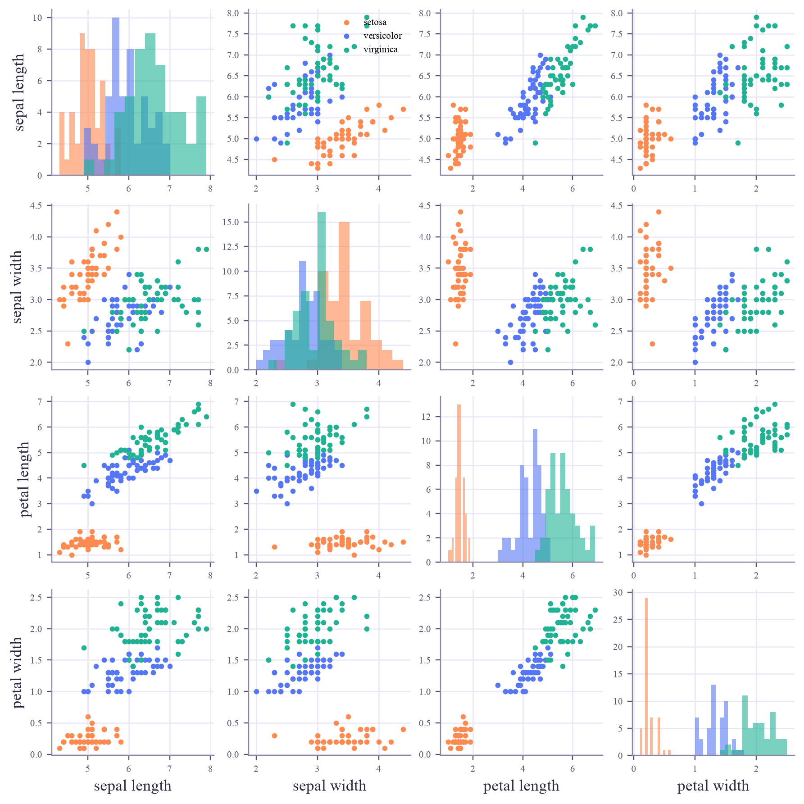

X: (150, 4) torch.float32
y: (150,) torch.int64
tensor([[5.1000, 3.5000, 1.4000, 0.2000],
[4.9000, 3.0000, 1.4000, 0.2000],
[4.7000, 3.2000, 1.3000, 0.2000]])
Machine Learning
 about 10 min
about 10 min ml-w1d2.ipynb
ml-w1d2.ipynb
Data as numbers: features, labels and tensors
A computer never sees a flower, only a row of numbers. Rows are examples, columns are features, and PyTorch keeps them in tensors.
In this lesson you will
- Read a dataset as a table of examples, features and labels
- See every example as a point in feature space, and notice that some features separate the classes better
- Make, slice and summarize a PyTorch tensor
Warm-up
1 minWhat the computer actually sees

Yesterday you met the iris flowers. You saw petals; the computer saw [5.1, 3.5, 1.4, 0.2]. Before any learning can happen, the world has to become numbers. Today: how that works, and where those numbers live in PyTorch.
Big idea
4 minA dataset is a table
Here are 5 of the 150 iris flowers. Every machine-learning dataset has this shape:
| sepal length | sepal width | petal length | petal width | species (label) | |
|---|---|---|---|---|---|
| 0 | 5.1 | 3.5 | 1.4 | 0.2 | setosa |
| 1 | 4.9 | 3.0 | 1.4 | 0.2 | setosa |
| 50 | 7.0 | 3.2 | 4.7 | 1.4 | versicolor |
| 100 | 6.3 | 3.3 | 6.0 | 2.5 | virginica |
| 101 | 5.8 | 2.7 | 5.1 | 1.9 | virginica |
- A row is one example (one flower). Written as a vector, it's , the highlighted row.
- A column is one feature: the same measurement for every example, like the petal length.
- The label is the answer column. Supervised learning has it; unsupervised learning doesn't.
All the features together form a matrix with one row per example: rows and columns. For iris, and , and in code that's simply X.shape == (150, 4).
Each example is a point in a -dimensional feature space. Learning is finding patterns among those points.
Two practical details matter a lot:
Categories become one-hot vectors
A color red / green / blue is not a number. Writing 0, 1, 2 would claim that green sits "between" red and blue. Instead each category gets its own column: red , green , blue .
Scales differ
A length in millimetres has numbers 10 times bigger than the same length in centimetres. Methods that measure distances get fooled, so we often standardize each feature: , giving mean 0 and spread 1.
Play
3 minWalk around feature space
Choose which two of the four features to draw. Each dot is one flower; point at a dot to see its row of the table.
Try this
Find the pair of features that separates the three species best (highest score). Then switch on Hide the labels: can you still see the groups? That is exactly the situation of an unsupervised learner in week 6.
Code
2 minTensors in PyTorch
The notebook for this lessonEvery code cell below, with what it printed, is in
ml-w1d2.ipynb. To change the code and run it yourself, open the notebook in Google Colab (free, in your browser) or download it for your own Jupyter.A tensor is PyTorch's array: a grid of numbers with a shape and a type. A table of features is a 2D tensor.
import torch
from sklearn.datasets import load_iris
iris = load_iris()
X = torch.tensor(iris.data, dtype=torch.float32) # features: one row per flower
y = torch.tensor(iris.target) # labels: 0, 1 or 2
print("X:", tuple(X.shape), X.dtype)
print("y:", tuple(y.shape), y.dtype)
print(X[:3])What it printed in the notebook
Square brackets pick rows, columns, or the rows that pass a test (a mask):
first = X[0] # one example: a vector of 4 features
petal_length = X[:, 2] # one feature, for every example
setosa = X[y == 0] # a boolean mask: the rows whose label is 0
print("one example: ", first, tuple(first.shape))
print("one feature: ", petal_length[:5], "...", tuple(petal_length.shape))
print("all setosa: ", tuple(setosa.shape))What it printed in the notebook
one example: tensor([5.1000, 3.5000, 1.4000, 0.2000]) (4,) one feature: tensor([1.4000, 1.4000, 1.3000, 1.5000, 1.4000]) ... (150,) all setosa: (50, 4)
Every column gets its own mean and spread. dim=0 means "go down the rows", giving one number per column:
mean = X.mean(dim=0) # dim=0: average down the rows, one number per column
std = X.std(dim=0)
Z = (X - mean) / std
print("means: ", mean.round(decimals=2))
print("spreads (std): ", std.round(decimals=2))
print("after: means ", Z.mean(dim=0).round(decimals=2).abs())
print("after: spreads ", Z.std(dim=0).round(decimals=2))What it printed in the notebook
means: tensor([5.8400, 3.0600, 3.7600, 1.2000]) spreads (std): tensor([0.8300, 0.4400, 1.7700, 0.7600]) after: means tensor([0., 0., 0., 0.]) after: spreads tensor([1., 1., 1., 1.])
import torch.nn.functional as F
onehot = F.one_hot(y, num_classes=3)
for i in [0, 50, 100]:
print(f"flower {i:3d}: label {y[i].item()} = {iris.target_names[y[i]]:<10} one-hot {onehot[i].tolist()}")What it printed in the notebook
flower 0: label 0 = setosa one-hot [1, 0, 0] flower 50: label 1 = versicolor one-hot [0, 1, 0] flower 100: label 2 = virginica one-hot [0, 0, 1]
And all six feature pairs at once, the matplotlib version of the widget:
import matplotlib.pyplot as plt
names = ["sepal length", "sepal width", "petal length", "petal width"]
colors = ["#ff8a50", "#5577f5", "#1fb394"]
fig, axes = plt.subplots(4, 4, figsize=(8, 8), layout="constrained")
for r in range(4):
for c in range(4):
ax = axes[r, c]
if r == c:
for k in range(3):
ax.hist(X[y == k, c].numpy(), bins=12, alpha=0.6, color=colors[k])
else:
for k in range(3):
ax.scatter(X[y == k, c], X[y == k, r], s=8, color=colors[k], label=iris.target_names[k])
if r == 3:
ax.set_xlabel(names[c])
if c == 0:
ax.set_ylabel(names[r])
ax.tick_params(labelsize=7)
axes[0, 1].legend(fontsize=7, loc="upper right")
plt.show()What it printed in the notebook

Your turn
2 minYour turn: the average flower
Compute the average flower of each species: the mean of each of the 4 features, over that species' rows only. Which feature differs the most between species?
for k, name in enumerate(iris.target_names):
rows = X[y == k]
average = None # TODO: the mean of each column of `rows` (4 numbers)
print(name, average)Need a hint?
X[y == k] keeps the rows of species k. Then .mean(dim=0) averages down those rows.
Show a solution
for k, name in enumerate(iris.target_names):
rows = X[y == k]
average = rows.mean(dim=0)
print(f"{name:>10}: sepal {average[0]:.2f} x {average[1]:.2f} cm, petal {average[2]:.2f} x {average[3]:.2f} cm")
print("\nPetal length changes the most (1.46 -> 4.26 -> 5.55 cm), which is why the petal plot separates the species so well.")What it printed in the notebook
setosa: sepal 5.01 x 3.43 cm, petal 1.46 x 0.25 cm versicolor: sepal 5.94 x 2.77 cm, petal 4.26 x 1.33 cm virginica: sepal 6.59 x 2.97 cm, petal 5.55 x 2.03 cm Petal length changes the most (1.46 -> 4.26 -> 5.55 cm), which is why the petal plot separates the species so well.
Check yourself
2 minQuick check
Question 1 of 3
A dataset describes 200 houses with 6 measurements each. In PyTorch, what is
X.shape?Question 2 of 3
Colors are stored as red = 0, green = 1, blue = 2. What can go wrong?
Question 3 of 3
For the iris tensor, what does
X[:, 3] give?Wrap-up
1 minToday in one sentence
(n, d).Quantum link
A quantum model also needs its data as numbers, and then has to load them into qubits, for example by turning each feature into a rotation angle. With 4 qubits you could encode one iris flower, one feature per qubit. That loading step, data encoding, opens the Quantum ML tutorial.
Go deeper (optional)
The official PyTorch tutorial "Tensors" shows many more ways to make and combine tensors.
Next in Machine Learning: your first classifier, k-nearest neighbors. It works by measuring distances in exactly this feature space.

That's the lesson!
Tap the button to save it. Short and steady wins.
Marked by mistake? Undo